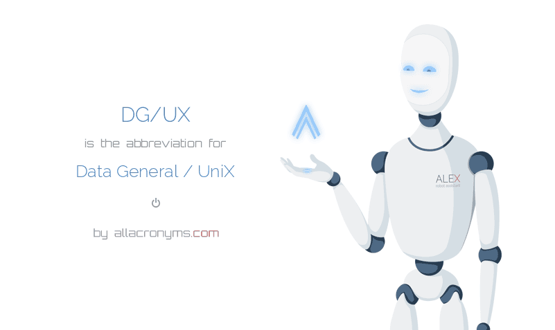

Egyéb tulajdonságok
- A hengerőmenedzser, ami az OS-be volt integrálva nagyon egyszerű, de erőteljes. Minden lemezadminisztrációt végre lehetett hajtani online, egyéb offline fájlrendszerek igénybevétele nélkül. Ezekbe értendő a kiterjesztés, áthelyezés, tükrözés vagy zsugorítás. Ugyanezek a funkciók hajthatók végre a swap memóriaterületen is, lehetővé téve a lemezadatok mozgását megállás nélkül.
- A DG/UX 5.4 támogatta a fájlrendszer zsugorítását, a "split mirror" online biztonsági mentést 2 TB-ig és a fájlrendszer naplózását. Nem sok szolgáltató kínált ilyen lehetőségeket abban az időben.